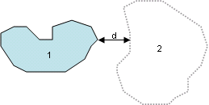

Welcome to the homepage for the STAMP Toolbar for ArcGIS . This toolbar implements functionality outlined in the paper: STAMP: Spatial-temporal analysis of moving polygons, published in the Journal of Geographical Systems, Volume 9, Number 3 / September, 2007.
The main purpose of STAMP is to facilitate spatial-temporal analysis of polygon data. This can be useful for analysis of phenomena that change spatially through time. Examples include examining a spreading wildfire in a forested area, and the spread of forest insects across a landscape. We hope that others will find additional uses for these methods.
Polygons from consecutive years are unioned, and the unioned layers are called "change layers". These change layers are made up of polygons that are given an event type, which describes the type of change that occured between the two times. Events are designated in the change layers based on spatial relationships between input polygons. The spatial relationships that create events are outlined below.
| Download STAMP Toolbar for ArcGIS as an msi executable (updated Dec 6 2007). Requires ArcGIS 9.2.
stamp_arcgis92.msi
here's some test data
read the tip sheet first! |
Events derived from SPATIAL OVERLAP
| T1 polygons (solid fill) and T2 polygons(dotted) in Change Layer | Events [attribute codes] |
|---|
| 1 = Contraction [CONTR]
2 = Stable [STABLE]
3 = Expansion [EXP] |
| 1 = Expansion [EXP]
2 = Stable [STABLE]
3 = Contraction [CONTR](Division)
4 = Stable [STABLE]
5 = Expansion [EXP] |
| 1 = Contraction [CONTR]
2 = Stable [STABLE]
3 = Expansion [EXP](Union)
4 = Stable [STABLE]
5 = Contraction [CONTR] |
Events derived from SPATIAL PROXIMITY
Movement events are derived for polygons within a distance threshold (d). These events can be classified by either the destination of the movement (T2 polygon) or the source of the movement (T1 polygon). The classications below are for T2 movements, but the T1 classification is given in brackets.
| T1 polygons (solid fill) and T2 polygons(dotted) in Change Layer | Events |
|---|
|  | 1 = Disappearance [DIS]
2 = Displacement [GD] ([DG] for T1) |
| 1 = Expansion [EXP]
2 = Stable [STABLE]
3 = Contraction [CONTR]
4 = Divergence [GC] (Concentration [DC]) |
| 1 = Contraction [CONTR]
2 = Stable [STABLE]
3 = Expansion [EXP]
4 = Fragmentation [GE] (Convergence [DE]) |
Events derived due to NO SPATIAL RELATIONSHIPS
Generation and Disappearance events occur when the distance to the nearest associated polygon is greater than the threshold distance.
| T1 polygons (solid fill) and T2 polygons(dotted) in Change Layer | Events |
|---|
| 1 = Disappearance [DIS]
2 = Generation [GEN] |